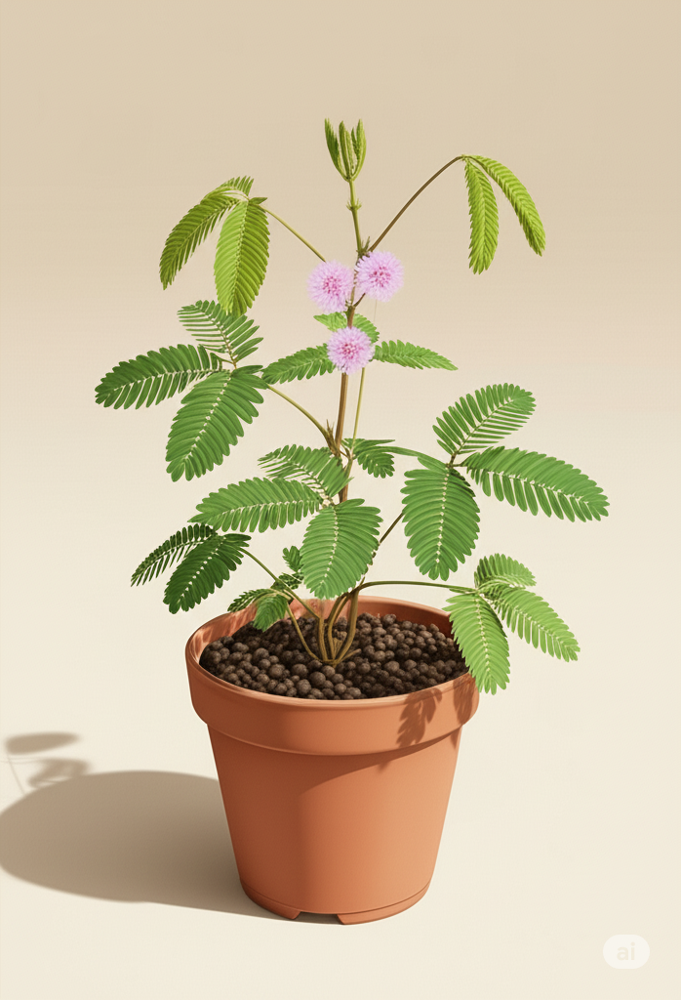

Nome científico: Mimosa pudica
☠️ Tóxica para gatos: Sim
☀️ Luz ideal: Sol pleno ou luz intensa
💧 Rega: Moderada
A Dormideira é conhecida por sua reação ao toque: suas folhas se fecham rapidamente quando tocadas. De aparência delicada, é popular pela curiosidade que desperta e suas pequenas flores rosadas.
💡 Curiosidade
Esse movimento natural ao toque é chamado de “tigmonastia” — uma defesa da planta contra predadores.
← Voltar para Plantas